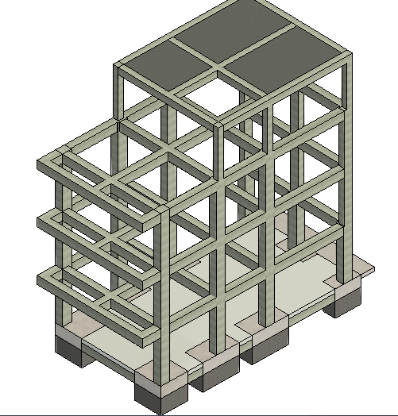
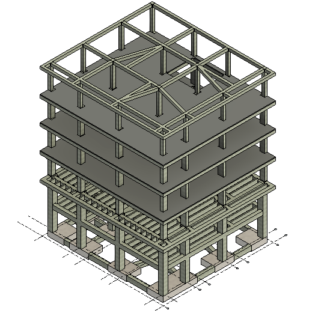
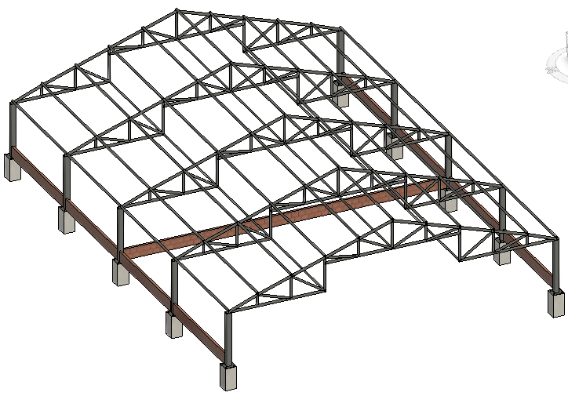
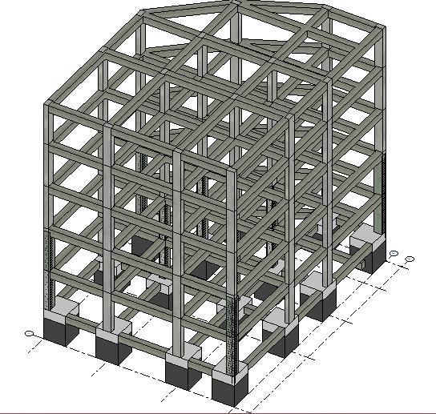
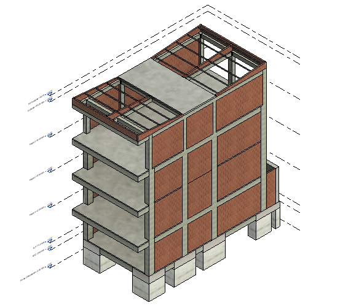
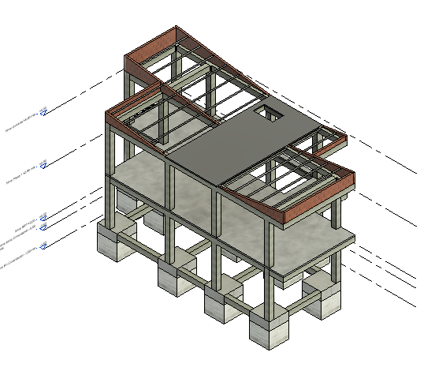
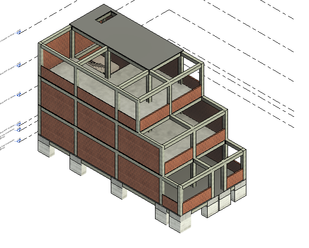
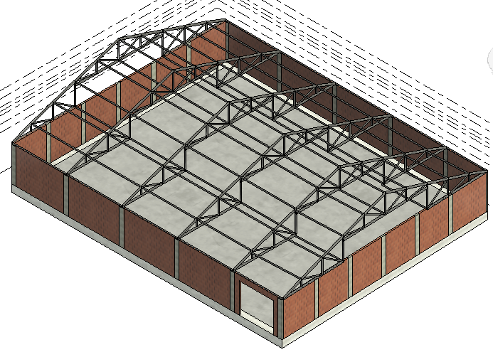
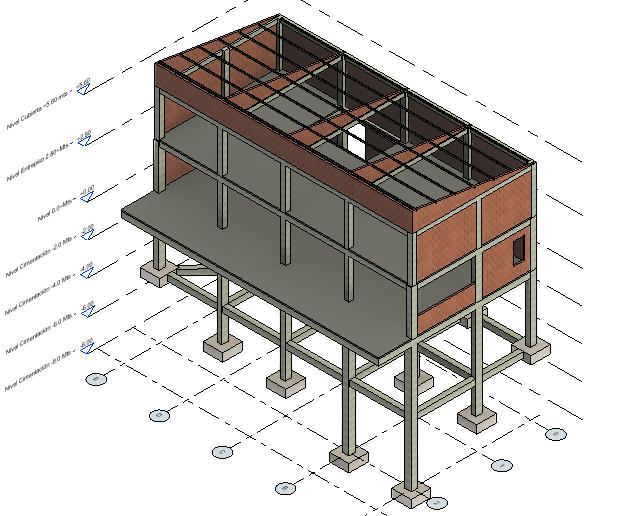

Proyecto 01 — ESCALA ESC-1
Edificio multifamiliar de 4 niveles en zona sísmica alta, con luz libre de 6 m sin columnas mediante pórticos en concreto y diseño conforme a NSR-10.
Casos de ingeniería estructural, flujos BIM y herramientas de software con enfoque en claridad, calidad y resultados.
Selección de proyectos en diseño estructural, reforzamiento, vivienda, industria y estructuras livianas.

Edificio multifamiliar de 4 niveles en zona sísmica alta, con luz libre de 6 m sin columnas mediante pórticos en concreto y diseño conforme a NSR-10.

Diseño estructural de edificio residencial de 6 niveles con parqueadero y 14 apartamentos, desarrollado en zona de alta amenaza sísmica y condiciones geotécnicas exigentes.

Diseño estructural de dos naves industriales avícolas de 15 × 100 m para incubación de huevos, resueltas con cerchas metálicas tipo Pratt y sistema mixto acero-concreto.

Diseño estructural de edificio multifamiliar de 5 niveles con parqueadero y 11 apartamentos, ubicado en zona de alta sismicidad y con condiciones geotécnicas complejas.

Proyecto estructural planificado para 2027 de edificio multifamiliar de 4 niveles con 4 apartamentos por piso, orientado a eficiencia espacial y desempeño estructural en zona de alta amenaza sísmica.

Diseño estructural de dos unidades tipo glamping en madera en entorno rural natural, con arriostramientos en acero y cubiertas livianas, orientado a mínimo impacto ambiental.

Diseño estructural de viviendas unifamiliares de 1 y 2 pisos de alto valor económico en un condominio exclusivo en Santander, Colombia, con proyección de más de 50 lotes y 3 diseños desarrollados a la fecha.

Evaluación estructural y propuesta de reforzamiento de vivienda unifamiliar de dos niveles en sistema aporticado, ubicada en zona de alta amenaza sísmica en Santander.

Diseño estructural de cubierta metálica para cerramiento en lote urbano, resuelta mediante cercha tipo Howe y optimizada para estabilidad y eficiencia estructural.

Diseño estructural de vivienda de lujo en terreno con pendiente extrema hacia el Cañón del Chicamocha, resuelta con columnas esbeltas y sistema de arriostramiento para control de pandeo.